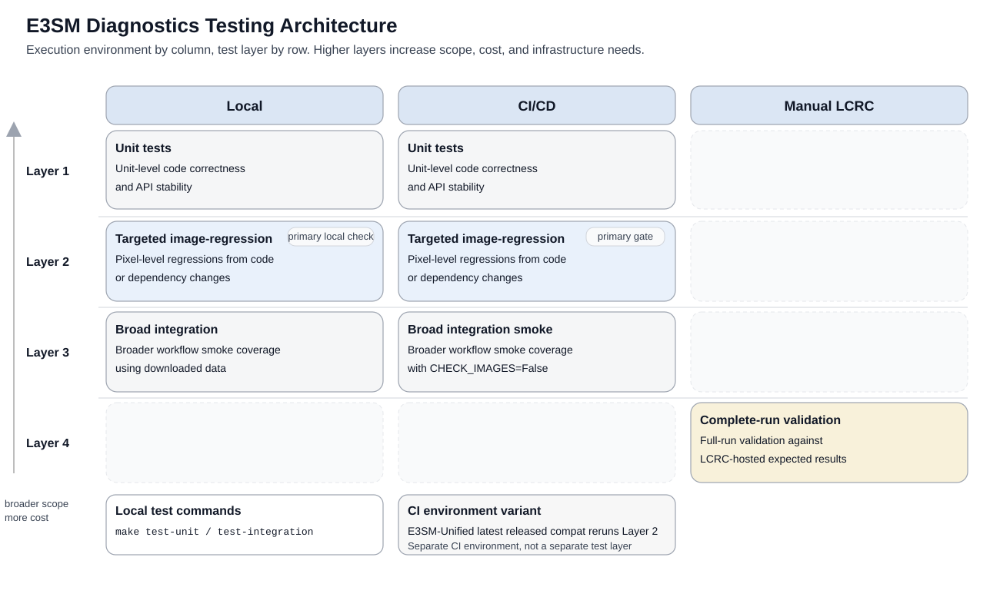

Testing E3SM Diagnostics
Testing Architecture
E3SM Diagnostics uses four test layers across local, CI/CD, and LCRC environments:
Unit tests for code correctness
Targeted image-regression tests for rendered output
Broad integration tests for diagnostic workflows
Complete-run validation against HPC-hosted data

Recommended Contributor Workflow
For most changes:
Run Layer 1 during local development.
Run Layer 2 for changes that may affect plots or rendered output.
Run Layer 3 when broader workflow coverage is needed.
Run the repository’s default local checks before opening a pull request.
Let CI/CD enforce Layers 1 through 3 on the pull request.
Run Layer 4 manually for high-risk changes requiring full NERSC validation.
Local Test Layers
Before running a test or baseline-promotion command, activate the E3SM Diags Conda environment:
conda activate <e3sm_diags_env>
Layer 1: Unit Tests
Unit tests check code correctness and API stability. Run them first during local development:
make test-unit
Layer 2: Targeted Image-Regression Tests
These tests detect pixel-level plot regressions using targeted synthetic cases and committed PNG baselines. Run them after Layer 1 when a code or dependency change may affect rendered output:
make test-image-regression
The suite currently covers:
lat_lonpolarzonal_mean_2dcosp_histogram
Baselines and their dependency metadata are stored in
tests/integration/baselines/.
Investigating Failures
Rerun the test with a persistent artifact directory:
IMAGE_REGRESSION_ARTIFACT_DIR=tests/integration/image_check_failures \
make test-image-regression
Inspect tests/integration/image_check_failures to determine whether the
change is expected. Each failed case includes:
The generated image
runtime_metadata.jsondependency_diff.json, comparing the runtime environment with the committedbaseline_metadata.json
Note
GitHub Actions uploads these artifacts when an image-regression test fails. Download them from the workflow run summary page.
Updating Baselines
Update baselines only when the plot change is intentional.
The preferred method is the manual Update Image Baselines GitHub Actions
workflow. It regenerates baselines on main using the authoritative
conda-env/ci.yml and Python 3.14 environment.
After the workflow completes, rebase affected branches onto main and rerun
CI.
To refresh baselines locally:
conda env create -f conda-env/ci.yml
conda activate e3sm_diags_ci
make refresh-image-regression
make test-image-regression
To refresh one case:
python -m tests.integration.refresh_plot_image_baselines --case polar
Use the same conda-env/ci.yml and Python 3.14 environment as the main CI
visual-regression gate. Commit the updated PNGs and
baseline_metadata.json.
Layer 3: Broad Downloaded-Data Integration Tests
These tests exercise broader diagnostic workflows with downloaded data. They verify that workflows complete and generate outputs, but do not perform pixel-level image comparisons.
Run them when broader integration coverage is needed:
make test-integration
The integration target downloads its required data automatically. It runs with
CHECK_IMAGES=False, making Layer 3 a workflow smoke test rather than the
visual-regression authority.
By default, tests.integration.download_data uses the local
/e3sm_diags_downloaded_data directory when available. Otherwise, it uses
crane export to copy that directory from the OCI image used by CI.
Use --source-root or --image for nonstandard data sources.
Layer 4: Complete-Run Validation
Layer 4 runs a broad set of diagnostics against HPC-hosted data and compares NetCDF outputs and PNG plots with an accepted baseline. Use it for high-risk changes, release validation, and scheduled regression checks.
See Complete-Run Validation for instructions.
Complete-Run Validation
Choose the workflow that matches what you need to test:
Workflow |
Purpose |
|---|---|
Test an exact |
|
Test the working checkout, including unmerged changes, or isolate dependency changes by holding the code revision fixed. |
Both workflows preserve results for Review Results and Manage Baselines.
Automated Validation at NERSC
Two scheduled controllers separate job submission from reporting:
Controller |
Schedule (Pacific time) |
Responsibility |
|---|---|---|
Submission |
Sunday at 06:00 on even ISO weeks |
Resolve |
Reporting |
Monday at 09:00 every week |
Check jobs, generate reports, and publish comparison and operational failures to GitHub Discussions. |
The CPU job creates a fresh, timestamped, SHA-qualified environment from
that revision’s ci.yml and runs diagnostics and comparisons. The cron
controllers do not create diagnostics environments or wait for CPU resources.
The reporting controller skips queued and running jobs until they exceed the configured stall threshold (72 hours by default), at which point it reports and notifies administrators. If Slurm accounting is not yet available after a job leaves the queue, it retries on its next invocation. Publication receipts prevent duplicate posts. Terminal operational failures and comparison failures also notify the administrator team.
The submission schedule is normally biweekly, with a three-week gap across ISO years that contain 53 weeks.
NERSC evaluates scrontab expressions in UTC. The installed table contains
both UTC offsets around each Pacific-time target, and the wrappers use
America/Los_Angeles to admit exactly the 06:00 submission or 09:00
reporting invocation across daylight-saving transitions.
Submit a Single Automated Run
To submit a run without waiting for the schedule:
python -m tests.complete_run.automation \
--worktree-root "$PSCRATCH/e3sm_diags-worktrees" \
--environment-root "$PSCRATCH/e3sm_diags-environments" \
--account e3sm
This submits the diagnostics job; reporting is handled separately by the reporting controller.
Configure and Maintain Automation
Scheduled runs use the controller wrapper and
tests/complete_run/complete-run.scrontab.template.
The compute allocation needs access to the configured Conda channels and package index, or the required packages must already be available locally. The operations owner configures job resources, CFS-to-Portal mapping, retention, and notifications.
Operations Directory
Keep the controller and its configuration in a non-public CFS directory:
/global/cfs/projectdirs/e3sm/e3sm_diags/operations/
├── e3sm_diags/ # Controller checkout
├── controller.env # Private configuration
├── controller-env/ # Persistent controller Conda environment
└── logs/ # Cron logs
Use $PSCRATCH for detached worktrees and diagnostics environments. Keep
candidate results outside the controller checkout and retain them on CFS.
Each immutable automated run is stored under:
<RESULTS_ROOT>/automation/<sha>-<timestamp>/
This directory includes the run’s results/, comparison artifacts, Slurm
output, status, and reports.
Set Up Scheduled Runs
Initialize the operations directory.
From an existing checkout:
OPS_DIR=/global/cfs/projectdirs/e3sm/e3sm_diags/operations make complete-run-ops-init OPERATIONS_DIR="$OPS_DIR"
This creates the controller checkout, external configuration, and logs directory. It defaults to
main, clones only if the checkout is absent, and never overwrites an existing configuration. To test unmerged automation changes, addBRANCH=<branch>.Create the reporting token.
A repository administrator must enable Discussions in
E3SM-Project/e3sm_diagsand create theComplete Test Run Reportscategory.Use a dedicated machine account with organization membership and write access to the repository. While signed in as that account, create a fine-grained personal access token with:
Resource owner:
E3SM-Project.Repository access: only
e3sm_diags.Repository permission: Discussions: read and write.
Expiration: a duration permitted by organization policy, with renewal arranged before expiration.
Store the token under the account that runs the controller:
make complete-run-ops-token-createThis creates
$HOME/.config/e3sm_diags/e3sm_diags-tokenwith mode0600. For another location, addTOKEN_FILE=/absolute/path/to/token. Keep the token outside the repository; store only its path incontroller.env.Configure the controller.
$EDITOR "$OPS_DIR/controller.env"
Review these settings and the values for CFS-to-Portal mapping, retention, and notifications:
Keep
controller.envoutside the repository with mode0600. If an existing operations directory lacks configuration, create it before editing:make complete-run-scron-config CONFIG="$OPS_DIR/controller.env"
Create the controller environment and install the schedule.
Run each command only after the previous command succeeds:
cd "$OPS_DIR/e3sm_diags" make complete-run-ops-env-create CONFIG="$OPS_DIR/controller.env" make complete-run-scron-validate CONFIG="$OPS_DIR/controller.env" make complete-run-scron-install CONFIG="$OPS_DIR/controller.env"
Installation preserves unrelated user schedules: it replaces only the explicitly marked E3SM Diags managed block in the existing scrontab.
Maintain Scheduled Runs
Run maintenance commands from the controller checkout:
OPS_DIR=/global/cfs/projectdirs/e3sm/e3sm_diags/operations
cd "$OPS_DIR/e3sm_diags"
Task |
Command |
|---|---|
Show schedule |
|
Show controller jobs |
|
Inspect controller environment |
|
Update controller environment |
|
Remove schedule |
|
Update the controller environment manually after controller code or
dependency changes, never from scrontab. The update holds the shared
controller-environment lock (also held by submission and reporting), exports
the current environment to operations/provenance/, updates from the
checkout’s ci.yml, reinstalls the checkout, and verifies the CLI. Removing
the schedule likewise removes only the managed E3SM Diags block and preserves
unrelated entries.
The operations owner manages result and environment retention and retries
failed publication using preserved Markdown reports. Temporary environments
are subject to the $PSCRATCH purge policy.
Manual Validation
Use this workflow to test the working checkout or control which code and dependencies change.
Prepare the environment on a NERSC login node.
STAMP=$(date -u +%Y%m%d)-$(git rev-parse --short HEAD) ENV_PREFIX="$PSCRATCH/e3sm_diags_complete_run_$STAMP"
Choose the dependency source:
Goal
Environment file
Code revision
Validate code changes
<baseline-dir>/prov/environment.ymlWorking checkout with the changes to test.
Isolate dependency changes
conda-env/dev.ymlBaseline’s exact revision. Using newer code also tests code changes.
Create the selected environment, then install the checkout:
mamba env create -f <environment-file> -p "$ENV_PREFIX" conda activate "$ENV_PREFIX" pip install .
Submit validation from the repository root.
Adjust the account, QoS, and walltime for your allocation. Request a full CPU node: diagnostics default to 24 workers, and
enso_diagscan have memory spikes.cat > "$PSCRATCH/complete_run_$STAMP.sbatch" <<EOF #!/bin/bash #SBATCH --account=e3sm #SBATCH --qos=regular #SBATCH --constraint=cpu #SBATCH --nodes=1 #SBATCH --time=01:00:00 #SBATCH --output=$PSCRATCH/complete_run_$STAMP.log set -eo pipefail source "$(conda info --base)/etc/profile.d/conda.sh" conda activate "$ENV_PREFIX" cd "$(pwd)" make test-complete-validate EOF sbatch "$PSCRATCH/complete_run_$STAMP.sbatch"
Alternatively, request an interactive allocation and run validation from the repository root:
salloc --nodes 1 --qos interactive --time 04:00:00 --constraint cpu --account=e3sm conda activate "$ENV_PREFIX" make test-complete-validate
Locate and review the results.
Each run creates an immutable timestamped directory with a branch and commit suffix under:
/global/cfs/cdirs/e3sm/www/e3sm_diags/complete-run-test/
Validation compares against
latest-mainand preserves candidate outputs, a JSON report, and PNG diffs. Follow Review Results and Manage Baselines before accepting differences.
Review Results and Manage Baselines
Interpret Results
Check the report’s environment section before interpreting differences.
For code validation, unexpected package or platform differences prevent
attributing output changes solely to code. For environment regression,
review dependency changes and their effects on outputs.
Results record the environment in prov/environment.yml and the manifest,
so temporary environments can be removed after review.
Automated JSON and Markdown reports include environment provenance, comparison failure counts, and CFS Portal links to results, comparison JSON, Slurm output, and the HTML visual-diff viewer. Coverage summaries distinguish shared, identical, cosmetic, different, and missing NetCDF and PNG artifacts. Discussion titles identify the run by short SHA and UTC timestamp.
Start with the HTML visual-diff viewer when available, then inspect the comparison JSON. Distinguish missing outputs from numerical or visual regressions; failed comparisons always require human review.
Repeat or Customize a Comparison
Repeat comparisons without rerunning diagnostics:
make test-complete-compare RUN_DIR=<results-dir>
To override the default latest-main baseline:
make test-complete-compare \
RUN_DIR=<results-dir> \
BASELINE_DIR=<baseline-dir>
Reports and PNG diffs are saved under comparison/ beside the result
directories. Comparison behavior:
NetCDF: Relative tolerance
1e-5and absolute tolerance0.0. Override with--rtoland--atolontests.complete_run.compare. Disclose any pass that requires wider tolerances.PNG: Images are classified as identical, cosmetic, or reviewable. Small rendering shifts may be cosmetic; layout, plotted-content, and compact text changes remain reviewable. Review newly cosmetic results before accepting them in an environment regression.
HTML:
--write-diff-htmlcreatesindex.htmlwith baseline, candidate, and diff images ranked fromSTRUCTURALtoMINOR. It includes diagnostic-set and severity filters, reports identical and cosmetic counts, and implies--write-diff-pngs.
To compare only PNGs:
python -m tests.complete_run.compare \
--dev-dir <results-dir> \
--mode images
The default pixel mismatch threshold is 0.0002, matching the targeted
image-regression suite. Change --image-mismatch-threshold only for a
reviewed environment difference.
Promote an Approved Baseline
After approval and merge, generate and review results from main in a
CPU allocation before promoting them:
make test-complete
make test-complete-compare RUN_DIR=<main-results-dir>
make promote-complete RUN_DIR=<main-results-dir>
Important
Automation publishes only reviewable comparison failures to GitHub Discussions. Clean comparisons produce no Discussion, even when environment provenance differs.
Automation never promotes baselines, passes --allow-non-main, or
reinterprets failed comparisons. Baseline promotion requires separate
human review and an explicitly confirmed manual action.
CI/CD Workflows
Main CI/CD Workflow
The main GitHub Actions workflow runs on pull requests and main. It
includes:
Layer 1 unit tests
Layer 2 targeted image-regression tests
Layer 3 integration smoke tests with
CHECK_IMAGES=False
Layer 2 is the authoritative visual-regression gate. Layer 3 provides broader workflow coverage without image matching.
Manual Image-Baseline Refresh
The manual Update Image Baselines workflow updates committed Layer 2
baselines directly on main. It is intended for legitimate plot changes
caused by dependency updates or other approved changes, avoiding a
baseline-only pull request.
The workflow:
Regenerates all Layer 2 baselines.
Reruns the targeted image-regression suite.
Pushes to
mainonly when the diff is limited totests/integration/baselines/.
Use this workflow only for intentional baseline updates. Normal code changes must use the standard pull request workflow.
Note
If verification fails, the workflow uploads the generated images, runtime metadata, and dependency differences for review.
E3SM-Unified Advisory Compatibility
The manual E3SM Unified Latest Release Advisory Compatibility workflow
runs Layer 2 against the latest released Linux nompi e3sm-unified
package from conda-forge.
This is an advisory production-compatibility check, not the authoritative
visual-regression gate. It compares plots from the released E3SM-Unified
environment with baselines generated by the main CI environment. Dependency
differences, such as different Matplotlib versions, may therefore cause image
mismatches without indicating an e3sm_diags regression.
Run this workflow when evaluating compatibility with the released E3SM-Unified environment. Review uploaded artifacts before classifying a failure as a code regression.
Implementation Details
The workflow:
Starts from
conda-env/ci.yml.Resolves the latest released
e3sm-unifiedpackage metadata fromconda-forge/linux-64/repodata.json.bz2.Substitutes the released package dependencies into the CI environment.
Caches Conda packages using the generated environment hash.
Runs the Layer 2 image-regression suite.
Baseline updates remain governed by the main Layer 2 environment on main.